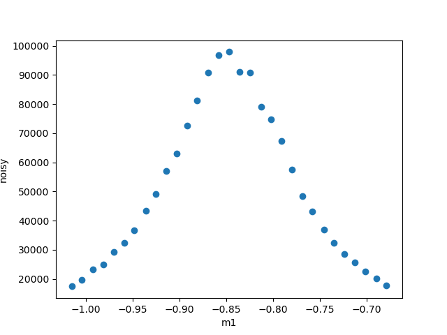

Exporting data from Bluesky#
An instrument scientist asks:
How to export experiment data for a user? How do I get the data out of the databroker to send it to my user?
Choices#
First, you have some choices:
How frequently do you want to do this?
one-time: learn a set of Python commands
occasional: build Python command (or callback) to expedite the steps for your users.
always: write file as data is acquired using a Bluesky
callback(to the blueskyRunEngine)
What tool(s) will the user(s) be using to read the data received?
databroker-pack#
The databroker-pack package
is used as part of the process to move a subset of a databroker catalog (or the entire catalog).
The utility
databroker-packboxes up Bluesky Runs as a directory of files which can be archived or transferred to other systems. At their destination, a user can pointdatabrokerat this directory of files and use it like any other data store.
The utility
databroker-unpackinstalls a configuration file that makes this directory easily “discoverable” so the recipient can access it usingdatabroker.catalog["SOME_CATALOG_NAME"].
Identify experiment data in databroker#
To access your experiment’s data, you need to get it from your catalog
(usually cat where cat = databroker.catalog[CATALOG_NAME]). You can
access by providing a reference. The reference is one of these:
scan_id(some positive integer)uid(a hexadecimal text string)Python reference to a recent scan (a negative integer such
-1for the most recent run).
Take this example for the fictious 45id catalog:
import databroker
cat = databroker.catalog["45id"]
run = cat[554] # access by scan_id
ds = run.primary.read() # all data from the stream named: primary
md = run.metadata # the run's metadata
NOTE: the run’s metadata is here: run.metadata.
This is a Python dictionary with start and stop keys for the respective document’s metadata.
A summary of the run is shown by just typing run on the command line:
In [12]: run
Out[12]:
BlueskyRun
uid='c6b461f7-53aa-4941-9e38-ce842f08bf2d'
exit_status='success'
2021-12-06 15:46:36.397 -- 2021-12-06 15:46:40.430
Streams:
* baseline
* PeakStats
* primary
Similarly, the primary data can be seen in a table:
In [13]: ds
Out[13]:
<xarray.Dataset>
Dimensions: (time: 31)
Coordinates:
* time (time) float64 1.639e+09 1.639e+09 ... 1.639e+09 1.639e+09
Data variables:
noisy (time) float64 1.783e+04 2.009e+04 ... 1.974e+04 1.745e+04
m1 (time) float64 -0.679 -0.69 -0.702 ... -1.004 -1.015
m1_user_setpoint (time) float64 -0.6792 -0.6904 -0.7016 ... -1.004 -1.015
Before plotting, tell matplotlib how to render the plot image:
import matplotlib
# for IPython console sessions
% matplotlib
# for notebooks, either of these
% matplotlib notebook
% matplotlib inline
Knowing that the independent data (x) name is m1 and the dependent data (y) name is noisy, this data can be plotted:
In [11]: ds.plot.scatter("m1", "noisy")
Out[11]: <matplotlib.collections.PathCollection at 0x7f52602fc640>

file export#
For one-time (or occasional) use, it might be simpler to export a data stream to a file. For simple data, text is very easy. For more structured data, you might consider SPEC or NeXus at this time.
text files#
Text files represent an easy way to inspect the data contents outside of any specific data analyasis software. But it helps to have some kind of structure (schema) to the content. That’s the purpose of CSV, JSON, SPEC, or some other schema.
CSV#
A notebook shows how to export data to CSV files.
The xarray structure of ds does not have a method to export to CSV,
but pandas does and ds has a to_pandas() exporter:
ds.to_pandas().to_csv(). Each stream can be written to a CSV file
(perhaps all together in one file but that looks complicated and is
against the objective keeping it simple). Here is an example:
with open("/tmp/run_554-primary.csv", "w") as f:
f.write(ds.to_pandas().to_csv())
The .to_csv() method has many options for formatting.
Since md is a dictionary structure, it is not so easy to write into a CSV file.
JSON#
While Python provides a
json package to
read/write a JSON file, it may be easier to use the xarray structure
returned by the databroker from run.primary.read() (where primary
is the name of the document stream named primary). Export the data to
JSON strings. These, in turn may be written to a file. Here is an
example:
import json
data = {"metadata": md}
for stream_name in list(run): # get ALL the streams
# such as data["primary"] = run.primary.read().to_dict()
data[stream_name] = getattr(run, stream_name).read().to_dict()
with open("/tmp/run_554.json", "w") as f:
f.write(json.dumps(data, indent=2))
SPEC#
The instrument package is configured to write SPEC files automatically
using the SPEC file writer callback (see SPEC: SpecWriterCallback section
below). The WRITE_SPEC_DATA_FILES key in the iconfig.yml
file
can be set to false if you wish to disable this.
HDF5 files#
Python support for the HDF5 format is usally provided through use of the
h5py package. NeXus is an example of a specific
raw#
HDF5 is a hierarchical data format, allowing much structure in how the data is stored in an HDF5 data file. Refer to the HDF5 documentation and/or the h5py documentation for details in how to write raw data to this format.
NeXus#
The instrument package is not configured to write NeXus files by default. See
the NeXus - NXWriterAPS section below if you wish to write NeXus files.
DX : Data Exchange#
not supported yet
Since there is no bluesky code yet to write data in the DX format, you must refer to the Data Exchange documentation for details.
Callbacks#
In the context of data for bluesky, a callback is python code that
subscribes to the bluesky RunEngine and receives documents during a
run. The callback should handle each of those documents to pwrite the
data according to the terms of the file format.
apstools#
The
apstools
package supports automatic data export to NeXus or SPEC data files via
callbacks. The support is provided in python class definitions that
handle each of the document types from the RunEngine.
NeXus - NXWriterAPS#
The documentation is brief. It may be more interesting to see the setup for the USAXS instrument
SPEC: SpecWriterCallback#
The documentation is brief. It may be more interesting to see the setup for the bluesky training instrument.